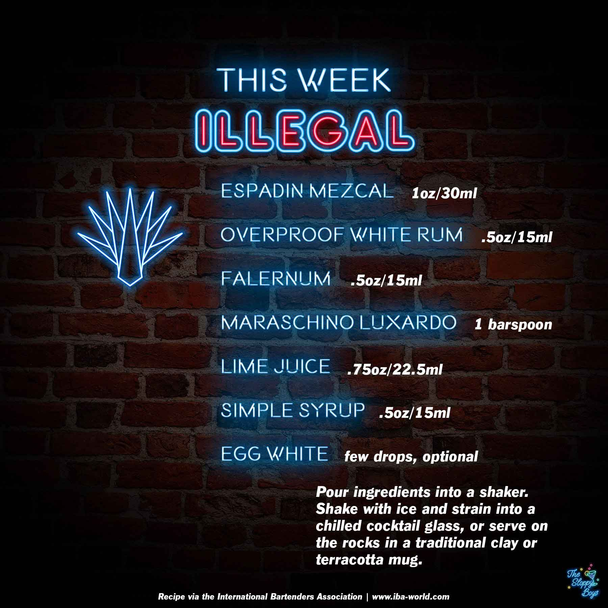

Illegal
Ingredients
- Espadin Mezcal (1oz/30ml)
- Overproof White Rum (.5oz/15ml)
- Falernum (.5oz/15ml)
- Maraschino Luxardo (1 barspoon)
- Lime Juice (.75oz/22.5ml)
- Simple Syrup (.5oz/15ml)
- Egg White (few drops, optional)
Steps
- Pour ingredients into a shaker.
- Shake with ice and strain into a chilled cocktail glass, or serve on the rocks in a traditional clay or terracotta mug.
Notes